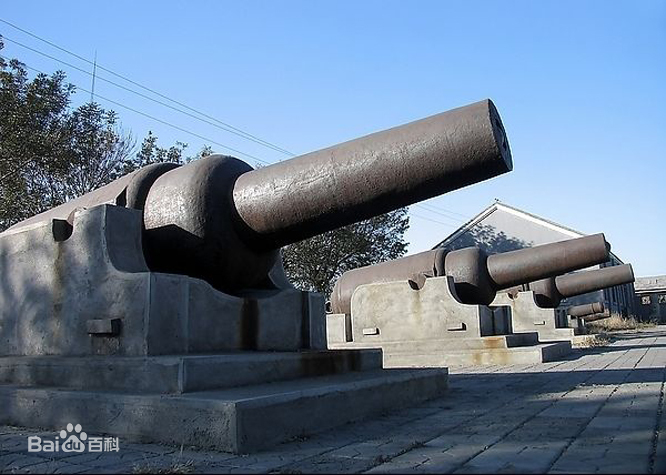
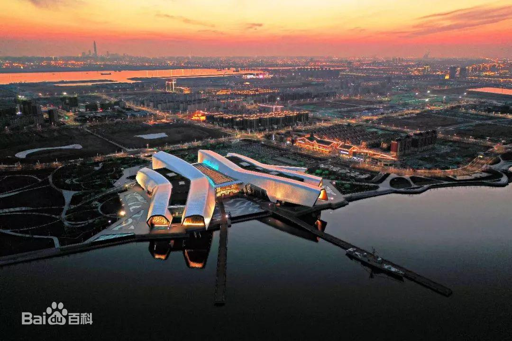

7月4日
目录
景点
-
大沽口炮台
路线
- 地铁9号线 天津站 => 市民广场 (17站)
- 步行 地铁市民广场站 => 公交轻轨市民广场(大连东道)站 (约551米)
- 公交旅游专线1路 轻轨市民广场(大连东道) => 大沽口炮台遗址博物馆(3站)
-
简介
大沽口炮台遗址位于天津市滨海新区，原置于海河南北两岸，俗称“津门之屏”。
明代，大沽口开始设防，清代修炮台，置大炮，设施不断加强，逐渐形成以“威，镇，海，门，高”为主体的完整防御体系。近代随着外国列强对华侵略，大沽地区更成为北方的军事要地。
大沽口炮台遗址南有虎门，北有大沽，这是中国近代史上两座重要的海防屏障。
后来大沽口炮台遗址被国务院确定为全国重点文物保护单位，又以“海门古塞”之誉评为“津门十景”之一，并确定为天津市爱国主义教育基地。
1988年国务院公布大沽口炮台遗址为第三批全国重点文物保护单位。
-
图片
大沽口炮台天津市·滨海新区
-
海洋博物馆
路线
- 步行 大沽口炮台 => 公交大沽口炮台遗址博物馆站 (约580米)
- 公交旅游专线1路 大沽口炮台遗址博物馆 => 轻轨市民广场(大连东道) (2站)
- 步行 公交轻轨市民广场(大连东道)站 => 地铁市民广场站 (约589米)
- 地铁9号线 市民广场 => 东海路 (3站)
- 步行 地铁东海路站 => 公交轻轨东海路站 (约107米)
- 公交旅游专线2路区间(或旅游专线2路) 轻轨东海路 => 海洋博物馆公交站 (10站)
-
简介
国家海洋博物馆是由自然资源部与天津市人民政府共建共管，集收藏、展示、研究、教育于一体的国家级综合性海洋博物馆，国家AAAA级旅游景区 。坐落于天津滨海新区中新生态城，占地面积15公顷，建筑面积8万平米，展览展示面积2.3万平米，建筑主体3层局部4层，陈列展览内容围绕“海洋与人类”主题展开，分为“海洋人文”、“海洋自然”、“海洋生态”三大版块，共设六大展区15个展厅，同时设有博物馆商店、餐厅、咖啡厅、影院等公共服务设施。国家海洋博物馆将努力打造成为国家公共文化体系的重要组成部分，成为海洋文物收藏保护中心、海洋文明研究中心、海洋文化交流传播中心、海洋体验中心，成为国家级爱国主义教育基地、海洋意识教育基地和科普教育基地。
-
图片
海洋博物馆天津市·滨海新区